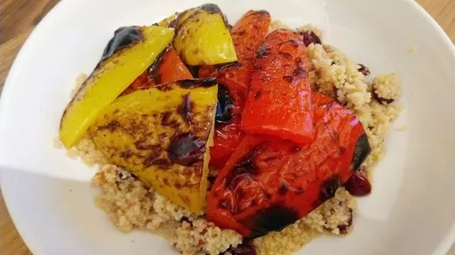

Chargrilled peppers with couscous
10 mins
Serves 1
Vegetarian

Don't let eating alone be an excuse not to eat well.
Ingredients
- 50 g couscous
- 2 tbsp sultanas or raisins
- ½ clove garlic, finely grated
- 1 red pepper and 0.5 yellow or orange pepper, deseeded and quartered
- ½ lemon, cut into wedges
- 1 tsp olive oil
- 2 tbsp chopped parsley or coriander leaves
Instructions
- Put the
couscous50 g
and sultanas2 tbsp
in a bowl, with the garlic½ clove
. Pour over 150 ml boiling water and leave, covered, for 5 minutes until the water is absorbed. Heat grill to high.
- Put the
peppers1
, skin side up, on the grill rack with the lemon½
wedges, brush with oil and grill for 5 minutes until the pepper skins are blackened (leave the skins on for a smoky flavour). Stir the herbs into the couscous50 g
and season.
- Spoon the
couscous50 g
on to a plate, top with the peppers1
and squeeze over the juice from the grilled lemon½
. Serve immediately.
-
kcal
326
-
fat
7 g
-
saturates
1 g
-
carbs
63 g
-
sugar
35 g
-
fibre
5 g
-
protein
7 g
-
salt
0.05 g
BBC Good Food: Low-fat Feasts
Short Link
Long Link